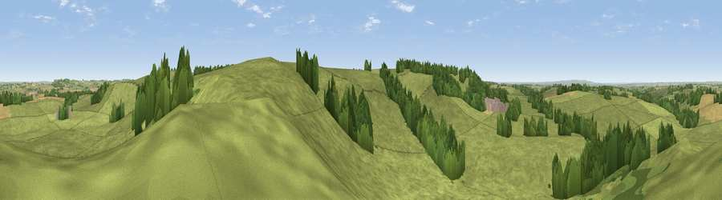

Viewpoint near Tilton on the Hill
#26295 in England · top 35% of its area beats it · near Tilton on the HillThe view, rendered

A 360° render of this exact spot computed from the terrain model, tree cover and land cover — summer colours, afternoon light, calibrated against photographs of famous viewpoints. Real trees, hedges and buildings will differ in detail.
The panorama
Grey silhouette: terrain skyline in each direction (720 bearings, Earth curvature and refraction included). Dashed green: skyline with trees (+15 m) and buildings (+8 m) as obstacles. Blue strip: how far the ground is visible on each bearing.
Where the view opens
Wedge length = distance to the farthest visible ground on that bearing (vegetation-aware). Rings at 10, 25 and 50 km.
What fills the view
83% grassland · 12% woodland · 4% cropland ·
Angular shares of the visible panorama (visual magnitude), not map area. Landscape diversity 0.25 (0–1 Shannon).
Key numbers
More beautiful places nearby
The staircase of upgrades: each row has a higher view potential than everything closer. Driving times are estimates from straight-line distance, calibrated against real road routing — check an actual route before setting out.
| Place | Direction | Drive | Score |
|---|---|---|---|
| Viewpoint near Tilton on the Hill | SE · 0 km | ~1 min | 48.3 |
| Viewpoint near Tilton on the Hill | ENE · 1 km | ~3 min | 49.5 |
| Life Hill | SSW · 1 km | ~4 min | 50.3 |
| Viewpoint near Cold Newton | SW · 2 km | ~5 min | 57.3 |
| Viewpoint near Burrough on the Hill | NNE · 7 km | ~14 min | 66.0 |
| Old John | WNW · 21 km | ~35 min | 70.3 |
| Broombriggs Hill | WNW · 23 km | ~38 min | 74.4 |
| Viewpoint near Woodhouse Eaves | WNW · 23 km | ~39 min | 77.7 |
52.64708, -0.92432 · source: screening · position refined by local search. Computed location — check access rights before visiting.